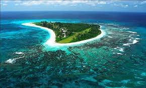

Trabalho de Geografia - Relevo da América Latina
Nas regiões costeiras e oceânicas da América Latina, existem várias ilhas e atóis. Essas áreas podem variar de pequenas ilhotas a ilhas maiores, algumas das quais são destinos turísticos populares.
[ ! ] Atol é uma ilha oceânica formada por corais e caracterizada por ter um formato oval. Normalmente, um atol se forma a partir da cratera de uma ilha vulcânica, quando recifes de corais se acumulam ao redor desta. Com o passar do tempo, a cratera começa a ficar submersa e se forma uma espécie de lagoa no interior da ilha.
_____